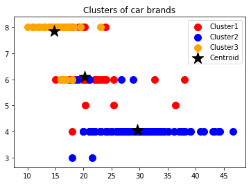

K-Means Clustering¶
K-Means adalah suatu metode penganalisaan data atau metode Data Mining yang melakukan proses pemodelan tanpa supervisi (unsupervised) dan merupakan salah satu metode yang melakukan pengelompokan data dengan sistem partisi. Metode k-means berusaha mengelompokkan data yang ada ke dalam beberapa kelompok, dimana data dalam satu kelompok mempunyai karakteristik yang sama satu sama lainnya dan mempunyai karakteristik yang berbeda dengan data yang ada di dalam kelompok yang lain. Dengan kata lain, metode ini berusaha untuk meminimalkan variasi antar data yang ada di dalam suatu cluster dan memaksimalkan variasi dengan data yang ada di cluster lainnya.
Data clustering menggunakan metode K-Means Clustering ini secara umum dilakukan dengan algoritma dasar sebagai berikut:
- Tentukan jumlah cluster
- Alokasikan data ke dalam cluster secara random
- Hitung centroid/rata-rata dari data yang ada di masing-masing ter
- Alokasikan masing-masing data ke centroid/rata-rata terdekat
- Kembali ke Step 3, apabila masih ada data yang berpindah cluster atau apabila perubahan nilai centroid, ada yang di atas nilai threshold yang ditentukan atau apabila perubahan nilai pada objective function yang digunakan di atas nilai threshold yang ditentukan
Algoritma K-Means Clustering¶
Distance Space atau Perhitungan Jarak Antara Data dan Centroid pada K-Means Clustering¶
Beberapa distance space dapat diimplementasikan untuk menghitung jarak (distance) antara data dan centroid termasuk di antaranya Manhattan/City Block Distance, Euclidean Distance dan Minkowski Distance. Untuk pembahasan lengkap mengenai distance space dan contoh perhitungan nya dapat dibaca pada artikel berjudul “Vector Space Model (VSM) dan Pengukuran Jarak pada Information Retrieval (IR)“.
Algoritma¶
Algoritma untuk melakukan K-Means clustering adalah sebagai berikut :
- Pilih K buah titik centroid secara acak
- Kelompokkan data sehingga terbentuk K buah cluster dengan titik centroid dari setiap cluster merupakan titik centroid yang telah dipilih sebelumnya
- Perbaharui nilai titik centroid
- Ulangi langkah 2 dan 3 sampai nilai dari titik centroid tidak lagi berubah
Proses pengelompokkan data ke dalam suatu cluster dapat dilakukan dengan cara menghitung jarak terdekat dari suatu data ke sebuah titik centroid. Perhitungan jarak Minkowski dapat digunakan untuk menghitung jarak antar 2 buah data. Rumus untuk menghitung jarak tersebut adalah :

Dimana :
g = 1, untuk menghitung jarak Manhattan
g = 2, untuk menghitung jarak Euclidean
g = ∞, untuk menghitung jarak Chebychev
xi , xj adalah dua buah data yang akan dihitung jaraknya
p = dimensi dari sebuah data
Pembaharuan suatu titik centroid dapat dilakukan dengan rumus berikut :
Di mana :
µk = titik centroid dari cluster ke-K
Nk = banyaknya data pada cluster ke-K
xq = data ke-q pada cluster ke-K
Tools¶
Bebearapa Tools yang bisa digunakan untuk membuat progam python K-Means Clustering :
Anaconda : anaconda.com
Jupyter Noot Book : jupyter.org
Terdapat Langkah-langkahnya juga di link tersebut untuk menjalakannya!.
Implementasion K-Mean C¶
Data Cars¶
import numpy as np
from matplotlib import pyplot as plt
import pandas as pdSelanjutnya Mengimpor dataset :
dataset = pd.read_csv('D:\MATKUL SI\Matkul UTM Semester4\DM\DM4\cars.csv')
X = dataset.iloc[:,:-1].values
X = pd.DataFrame(X)
X = X.convert_objects(convert_numeric=True)
X.columns = ['mpg', ' cylinders', ' cubicinches', ' hp', ' weightlbs', ' time-to-60', 'year']
dataset.head()Sehingga akan muncul tampilan seperti dibawah :
| mpg | cylinders | cubicinches | hp | weightlbs | time-to-60 | year | brand | |
|---|---|---|---|---|---|---|---|---|
| 0 | 14.0 | 8 | 350 | 165 | 4209 | 12 | 1972 | US. |
| 1 | 31.9 | 4 | 89 | 71 | 1925 | 14 | 1980 | Europe. |
| 2 | 17.0 | 8 | 302 | 140 | 3449 | 11 | 1971 | US. |
| 3 | 15.0 | 8 | 400 | 150 | 3761 | 10 | 1971 | US. |
| 4 | 30.5 | 4 | 98 | 63 | 2051 | 17 | 1978 | US. |
dataset.corr()Menghilangkan nilai 0
for i in X.columns:
X[i] = X[i].fillna(int(X[i].mean()))
for i in X.columns:
print(X[i].isnull().sum())0
0
0
0
0
0
0Menerapkan k-means ke dataset mobil
kmeans = KMeans(n_clusters=3,init='k-means++',max_iter=100,n_init=10,random_state=0)
y_kmeans = kmeans.fit_predict(X)
dataset["Kelompok"] = y_kmeans
print (dataset)
X = X.as_matrix(columns=None) mpg cylinders cubicinches hp weightlbs time-to-60 year \
0 14.0 8 350 165 4209 12 1972
1 31.9 4 89 71 1925 14 1980
2 17.0 8 302 140 3449 11 1971
3 15.0 8 400 150 3761 10 1971
4 30.5 4 98 63 2051 17 1978
5 23.0 8 350 125 3900 17 1980
6 13.0 8 351 158 4363 13 1974
7 14.0 8 440 215 4312 9 1971
8 25.4 5 183 77 3530 20 1980
9 37.7 4 89 62 2050 17 1982
10 34.0 4 108 70 2245 17 1983
11 34.3 4 97 78 2188 16 1981
12 16.0 8 302 140 4141 14 1975
13 11.0 8 350 180 3664 11 1974
14 19.1 6 225 90 19 1981
15 16.9 8 350 155 4360 15 1980
16 31.8 4 85 65 2020 19 1980
17 16.0 8 304 150 3433 12 1971
18 24.0 4 113 95 2278 16 1973
19 24.0 4 107 90 2430 15 1971
20 37.2 4 86 65 2019 16 1981
21 21.5 4 121 110 2600 13 1978
22 24.0 6 200 81 3012 18 1977
23 15.5 8 351 142 4054 14 1980
24 38.1 4 89 60 1968 19 1981
25 33.0 4 91 53 1795 17 1977
26 31.0 4 71 65 1773 19 1972
27 14.0 8 351 148 4657 14 1976
28 18.0 6 250 78 3574 21 1977
29 29.9 4 98 65 2380 21 1982
.. ... ... ... ... ... ... ...
231 28.0 4 120 79 2625 19 1983
232 23.0 4 140 78 2592 19 1976
233 16.0 8 318 150 4498 15 1976
234 20.0 4 130 102 3150 16 1977
235 44.0 4 97 52 2130 25 1983
236 14.0 8 318 150 4096 13 1972
237 20.2 6 200 85 2965 16 1979
238 39.0 4 86 64 1875 16 1982
239 23.0 4 122 86 2220 14 1972
240 13.0 8 350 145 4055 12 1977
241 18.0 6 225 105 3121 17 1974
242 16.0 8 400 180 4220 11 1978
243 25.0 4 110 87 2672 18 1971
244 14.0 8 454 220 4354 9 1971
245 15.0 8 318 150 3399 11 1974
246 19.4 8 318 140 3735 13 1979
247 44.3 4 90 48 2085 22 1981
248 28.0 4 97 75 2155 16 1977
249 29.0 4 135 84 2525 16 1983
250 32.1 4 98 70 2120 16 1981
251 24.0 4 121 110 2660 14 1974
252 36.4 5 121 67 2950 20 1981
253 13.0 8 350 145 3988 13 1974
254 23.5 6 173 110 2725 13 1982
255 24.0 4 113 95 2372 15 1971
256 17.0 8 305 130 3840 15 1980
257 36.1 4 91 60 1800 16 1979
258 22.0 6 232 112 2835 15 1983
259 18.0 6 232 100 3288 16 1972
260 22.0 6 250 105 3353 15 1977
brand Kelompok
0 US. 2
1 Europe. 1
2 US. 0
3 US. 2
4 US. 1
5 US. 2
6 US. 2
7 US. 2
8 Europe. 0
9 Japan. 1
10 Japan. 1
11 Europe. 1
12 US. 2
13 US. 0
14 US. 0
15 US. 2
16 Japan. 1
17 US. 0
18 Japan. 1
19 Europe. 1
20 Japan. 1
21 Europe. 1
22 US. 0
23 US. 2
24 Japan. 1
25 Japan. 1
26 Japan. 1
27 US. 2
28 US. 0
29 US. 1
.. ... ...
231 US. 1
232 US. 1
233 US. 2
234 Europe. 0
235 Europe. 1
236 US. 2
237 US. 0
238 US. 1
239 US. 1
240 US. 2
241 US. 0
242 US. 2
243 Europe. 1
244 US. 2
245 US. 0
246 US. 2
247 Europe. 1
248 Japan. 1
249 US. 1
250 US. 1
251 Europe. 1
252 Europe. 0
253 US. 2
254 US. 0
255 Japan. 1
256 US. 2
257 Japan. 1
258 US. 0
259 US. 0
260 US. 0
[261 rows x 9 columns]Terakhir Memvisualisasikan cluster atau menampilkan hasil cluster
plt.scatter(X[y_kmeans == 0, 0], X[y_kmeans == 0,1],s=100,c='red',label='Cluster1')
plt.scatter(X[y_kmeans == 1, 0], X[y_kmeans == 1,1],s=100,c='blue',label='Cluster2')
plt.scatter(X[y_kmeans == 2, 0], X[y_kmeans == 2,1],s=100,c='orange',label='Cluster3')
plt.scatter(kmeans.cluster_centers_[:,0],kmeans.cluster_centers_[:,1],s=300,c='black',marker='*', label='Centroid')
plt.title('Clusters of car brands')
plt.legend()
plt.show()
Silahkan Klik Link dibawah ini untuk donwload file CSV